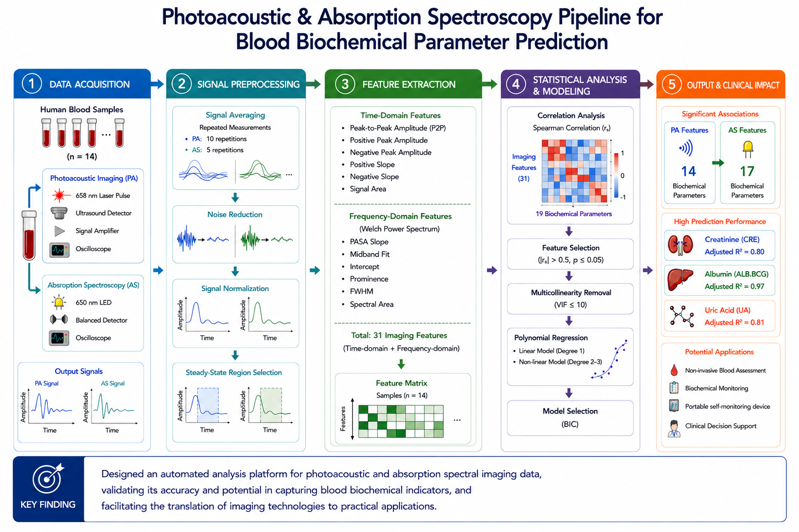

Objective: Conventional blood biochemical testing requires invasive blood sampling and laboratory analysis, limiting its applicability for continuous monitoring and rapid screening. This study aimed to evaluate the potential of photoacoustic imaging and absorption spectroscopy imaging as non-invasive molecular sensing technologies for biochemical assessment. By extracting time-domain and frequency-domain signal features and integrating statistical modeling approaches, we investigated whether imaging-derived biomarkers could accurately reflect and predict clinically relevant blood biochemical parameters. The ultimate goal was to establish an automated analysis framework that supports the development of portable, non-invasive health monitoring technologies for future clinical applications.
We analyzed the correlation between optical signals and 19 specific biochemical markers, categorized by their biological relevance and sensing technology detection.

This study demonstrated that both photoacoustic imaging and absorption spectroscopy imaging contain biologically meaningful signal features that are significantly associated with multiple blood biochemical parameters. Photoacoustic imaging features were significantly correlated with 14 biochemical parameters, while absorption spectroscopy imaging features were associated with 17 parameters. Statistical prediction models achieved strong performance for several clinically important biomarkers, including creatinine, uric acid, and albumin, with adjusted R² values reaching 0.80–0.97. These findings indicate that imaging-derived biomarkers can provide quantitative information about blood biochemistry and support the feasibility of non-invasive biochemical assessment. The developed analytical framework offers a promising foundation for future portable self-monitoring devices and next-generation clinical diagnostic technologies.